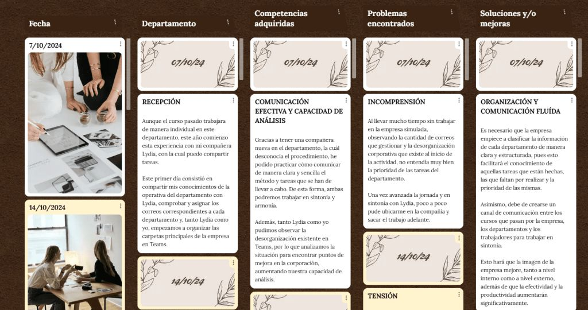

La evaluación por competencias en educación es un reto complejo que exige una transformación profunda de las metodologías de enseñanza y evaluación. La normativa educativa vigente en España, en concreto la Ley Orgánica 3/2020 (LOMLOE), obliga a evaluar las competencias clave en todos los niveles educativos.
En la práctica, sin embargo, mucho profesorado sigue usando métodos tradicionales como exámenes y trabajos convencionales, y después traduce las notas resultantes a competencias mediante herramientas digitales como Additio o iDoceo. Este enfoque puede resultar insuficiente, ya que el alumnado a menudo no tiene la oportunidad real de desarrollar, comprender o aplicar las competencias que se espera que adquiera; en muchos casos ni siquiera sabe cuáles son esas competencias.
Una prueba sencilla lo ilustra: pregunta directamente al alumnado de secundaria si sabe qué competencias necesita desarrollar y cómo se relacionan con su aprendizaje diario. A muchos les costará responder con claridad, lo que revela una desconexión entre los objetivos normativos y la práctica real.
La evaluación por competencias debe ir más allá de traducir las notas tradicionales. Hace falta un cambio cultural que promueva metodologías activas y participativas en las que el alumnado sea consciente de las competencias que desarrolla y tenga oportunidades reales de practicarlas y reflexionar sobre ellas.
El aprendizaje basado en simulación permite al alumnado vivir escenarios laborales realistas en un entorno seguro y controlado. Asumen roles dentro de un entorno empresarial virtual, gestionando desde la planificación de proyectos hasta la toma de decisiones estratégicas, lo que reproduce las dinámicas y los retos del mundo laboral.
Un aspecto clave es el aprendizaje activo: el alumnado no solo adquiere conocimientos teóricos, sino que los aplica directamente a situaciones reales, resolviendo problemas, colaborando con sus compañeros y adaptándose a distintos roles y departamentos.
Como el enfoque convencional de poner notas no capta del todo el progreso del alumnado, he implementado un sistema de evaluación que va más allá de las calificaciones, centrado en el crecimiento personal de cada estudiante y usando el marco EntreComp para desarrollar competencias emprendedoras.
Fases de la evaluación por competencias
En la empresa simulada, la evaluación se organiza en tres fases. La evaluación inicial sitúa al alumnado en el contexto de las competencias que se espera que desarrolle, estableciendo un punto de partida. La evaluación formativa, aplicada a lo largo del curso como evaluaciones del desempeño simuladas, guía el aprendizaje en tiempo real con feedback personalizado del propio alumnado, de sus compañeros y del equipo docente. La evaluación final es una evaluación del desempeño en la que cada estudiante reflexiona sobre sus logros y áreas de mejora y elabora un plan de acción.
Herramienta de evaluación: CoRubrics
Para estructurar la evaluación uso CoRubrics, un complemento de Google Sheets que gestiona rúbricas de evaluación basadas en las competencias EntreComp. Permite la autoevaluación, la coevaluación y la evaluación del profesorado, y su proceso automatizado envía a cada estudiante un feedback detallado y personalizado.
Diario de aprendizaje
Cada estudiante mantiene además un diario de aprendizaje digital donde recopila evidencias de las competencias que cree haber desarrollado. Es una herramienta valiosa para la autorreflexión y durante las evaluaciones del desempeño mensuales, especialmente cuando hay discrepancias entre la autoevaluación y la de otros evaluadores.

Evaluar competencias en un entorno empresarial simulado es un reto que requiere creatividad y compromiso de todas las partes implicadas.
El aprendizaje basado en simulación ofrece una oportunidad única para enseñar competencias de forma activa, pero para aprovecharlo al máximo necesitamos métodos de evaluación que reflejen la naturaleza dinámica y práctica de este aprendizaje. Puedes encontrar mis recursos de evaluación en esta carpeta.